今天开启限免，3 天内 0 元领终身会员，无内购套路。
截止日期：价格于 2026 年 1 月 19 日结束。
功能主要分四个 Tab ，外加一些我个人很在意的特色细节：
1. Today （压力仪表盘）
主打 实时压力监测。聚合了 HealthKit 的生理数据，直接计算并展示你当下的压力值，顺带展示步态、噪音等底层数据。抬腕即看，比原生更直观。
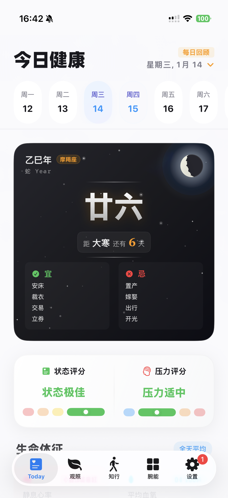
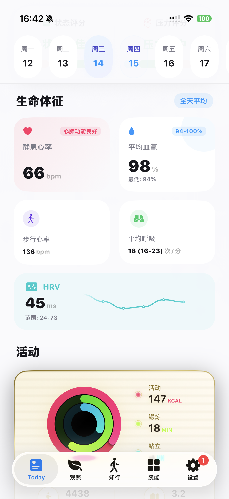
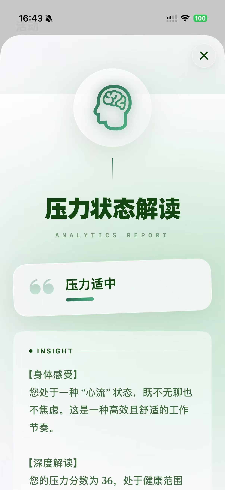
2. 观照（趋势分析）
对历史健康数据做可视化。用 SpriteKit 做了 压力热力图，一眼看出这周哪天压力大。还有睡眠月相图和 ECG 分析。
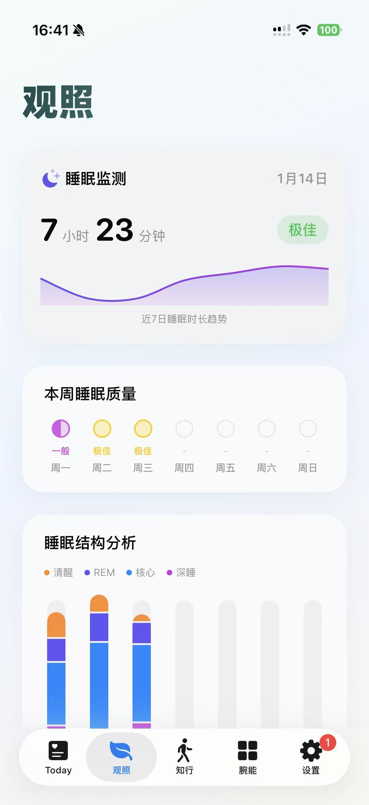
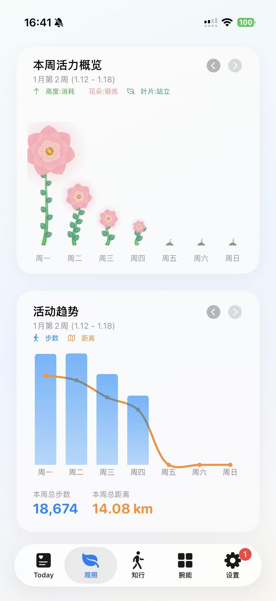
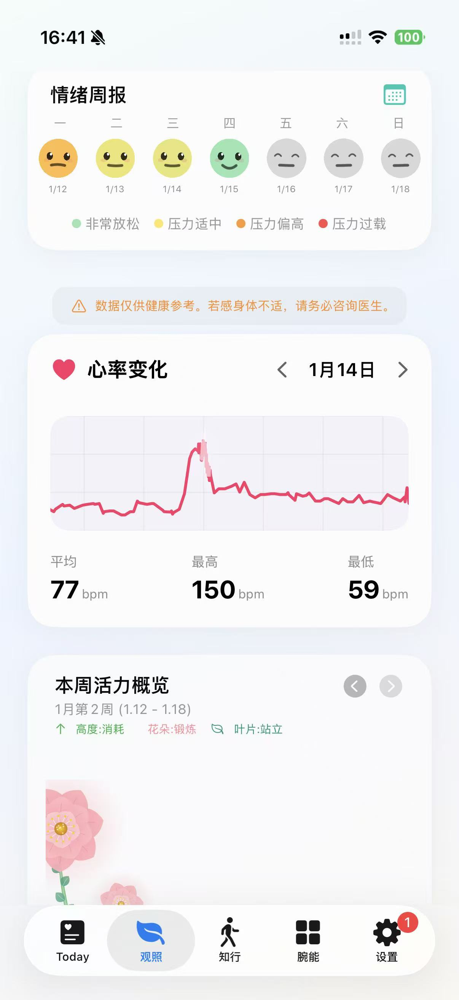
3. 知行（效率辅助）
番茄钟、饮水记录、咖啡因追踪等量化工具的集合。
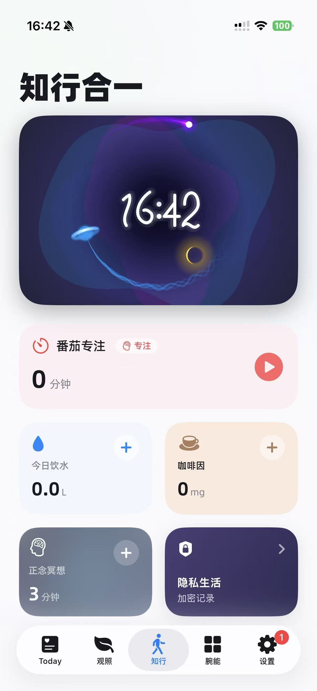
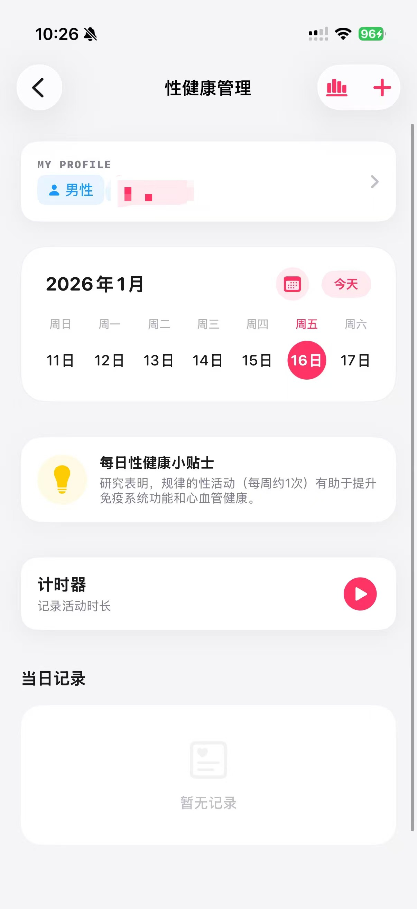
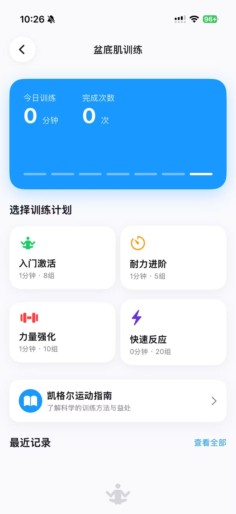
4. 腕能（文件系统）
这是最核心的功能，在手表上做了一套 文件管理器。
📂 传文件：手机传视频、音乐、TXT 小说/漫画到手表本地，支持离线播放阅读。
🌐 浏览器：应急用的全功能浏览器。
📰 RSS：腕上阅读器。
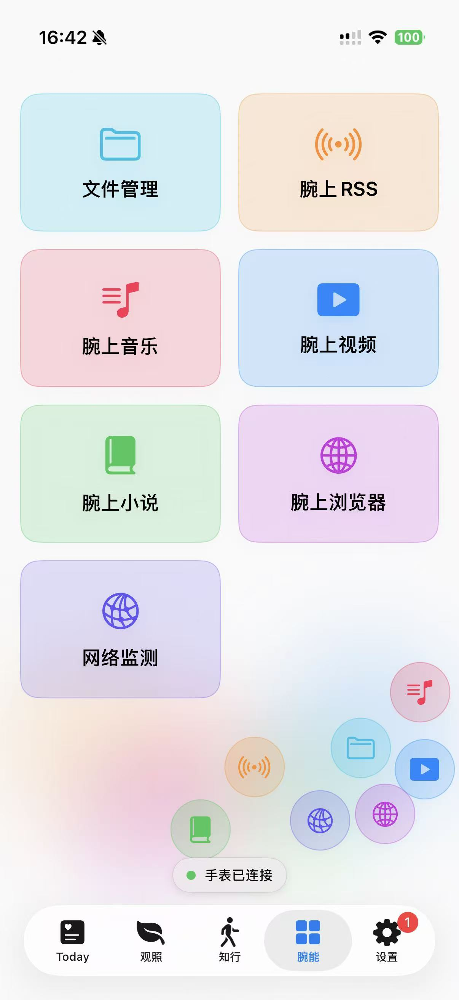
5. 精选表盘
精心设计的实用表盘，将关键信息以最美观的方式呈现在手腕上。
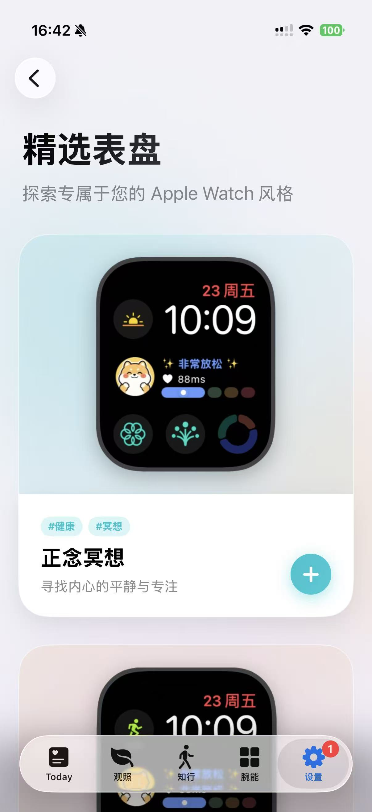
✨ 特别打磨的两个细节功能
全屏时钟 + 状态监测（防尴尬版）
提供全屏翻页时钟，同时实时显示压力与专注度评估。
特别说明：为了方便大家在公司或自习室挂机使用，我特意设计了 积极向的提示文案。即便状态不佳，也只会显示正向引导，绝不会弹出“你走神了”这种让人尴尬的负面评价。
(注：该功能为横屏全屏显示)
私密健康 + 隐私锁
关注一些重要但私密的指标：内置 性健康管理 与 凯格尔运动 训练辅助。
这部分数据默认开启 FaceID 隐私保护，只有通过生物识别验证才能查看，把秘密留在手腕里。
⬇️ App Store 下载
觉得好用给个好评，有 Bug 评论区反馈，我会修。